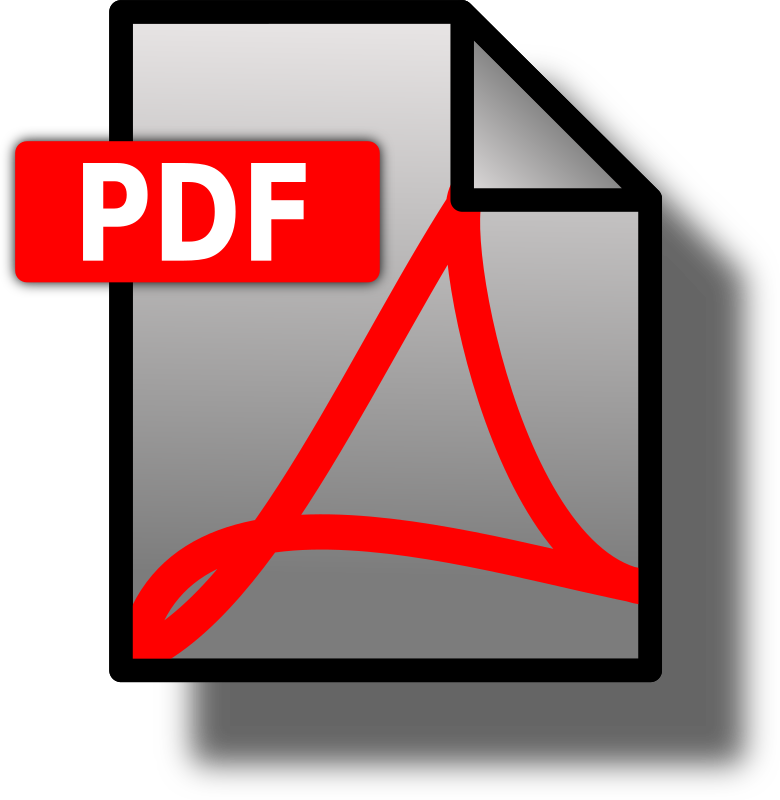
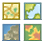

|  |
|  |
Welcome to the
JavaScript Sample Viewer
JavaScript Sample Viewer
Click anywhere on the map, at any point to identify assets
To navigate through selected features use the Prev and Next buttons
Typically water layers will be the first layers in order, followed by sewer layers, then facilities, then base layers
Select the icon to zoom to the extent of the selected feature
Note: While you are making a measurement, this ability will be disabled. In order to identify an asset, select a different tool, then click on the feature again
The side panel can be shown/hidden at any point in time
Clearing search results automatically hides the side panel, whereas identifying an asset or clicking a button in the side bar automatically shows it
Selecting a button a second time once it is already activated will also hide the side panel
The "Hide" button at the bottom of the side panel is also a shortcut to hide the side panel at any point
Select the magnifying glass to search for an address or asset
You can search Service Definitions or for addresses
Select the symbol to search for specific asset types
Select or press Enter to search
By default, all layers are searched
To measure a distance, area, or coordinates select the tape measure image
Select the icon to measure an area
Select the
 icon to measure distance
icon to measure distanceSelect the icon to measure coordinates
In order to change the units of the measurement, click the icon and select the desired unit
To create a digital or printable map, select the pdf symbol
You may choose to enter a map title or map text in the first two boxes
Select from format, quality, and size from the drop down selections
After selecting print you may preview the map to save it
Choose the
Select Remake Map to recreate your map
To toggle layer visibility, select the layers image
The icons represent whether the layer is collapsed or expanded. A downward facing arrow can be clicked to expand the layer. An upward facing arrow can be clicked to collapse the layer
Currently visible layers are symbolized with the icon. Click on the box to toggle visibility
If the layer name is grayed out it is not visible at your current scale, you must zoom in to be able to see the layer
Slide the transparency bars to lighten either the background or the main layers of the map
To switch basemaps select the maps image
By default, the topographic map is selected
Select a basemap thumbnail image to switch to that basemap
In order to view this panel again, select the help image or refresh the page
Search for an Asset
Select a Basemap
Create a Measurement
Layer Transparency
Map Transparency